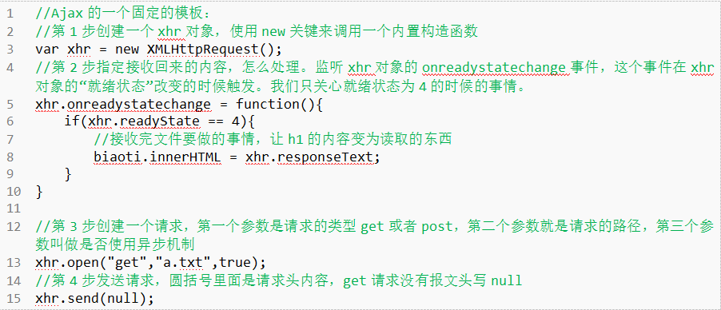

回到首页
js ajax
AJAX即“Asynchronous Javascript And XML”（异步JavaScript和XML），是指一种创建交互式网页应用的网页开发技术。
AJAX 是一种用于创建快速动态网页的技术
AJAX 不是新的编程语言，而是一种使用现有标准的新方法
AJAX请求的特点：
1、不刷新页面
2、服务器仅返回需要的数据
* 发送ajax请求 * url--url * methodtype(post/get) * con (true(异步)|false(同步)) * parameter(参数) * functionName(回调方法名，不需要引号,这里只有成功的时候才调用) * (注意：这方法有二个参数，一个就是xmlhttp,一个就是要处理的对象) * obj需要到回调方法中处理的对象 状态码 意义 200 服务器正确处理了请求并向应 404 请求的页面未找到 403 没有权限访问请求的页面 405 页面不接收该请求方式 408 请求超时 500 服务器处理请求时发生异常 503 服务暂时不可用 304 页面未修改 0（未初始化） 对象已建立，但是尚未初始化（尚未调用open方法） 1（初始化） 已调用send()方法，正在发送请求 2（发送数据） send方法调用完成，但是当前的状态及http头未知 3（数据传送中） 已接收部分数据，因为响应及http头不全，这时通过responseBody和responseText获取部分数据会出现错误， 4（完成） 数据接收完毕，此时可以通过responseBody和responseText获取完整的回应数据原生js之四步走搞定Ajax
第一步，new出一个XMLHttpRequest对象
var xhr = new XMLHttpRequest();第二步，处理服务器上面返回的响应
xhr.onreadystatechange = function(){ if(xhr.readyState ==4){ biaoti,innerHTML = xhr.responseText; } }第三步，创建一个请求，第一个参数是请求的类型get或post，第二个参数就是请求的路径，第三个参数叫做是否使用异步机制
xhr.open("post","php/do2.php",true);如果是post请求，在发送请求前需要做一下处理：
xhr.setRequestHeader("Content-Type","application/x-www-form-urlencoded");第四部，发送请求
xhr.send("xingming ="+encodeURIComponent("大主宰")+'&age=18')
JQ ajax
$.ajax({
type: "POST",
data : o, data: "name=John&location=Boston", o&name=jack&age=25
dataType: "JSON",
async: false,
url: "coupon_channel.php?act=update",
success: function(msg) {
console.log(msg);
console.log("请求成功");
}
error： function(error) {
console.log(error);
console.log("请求失败");
}
});
1.type: GET /POST
请求方式 ("POST" 或 "GET")， 默认为 "GET"。注意：其它 HTTP 请求方法，如 PUT 和 DELETE 也可以使
用，但仅部分浏览器支持。
2.async: true/false
默认为 异步请求
false 同步请求 注意，同步请求将锁住浏览器，用户其它操作必须等待请求完成才可以执行。
4.dataType:"JSON"
预期服务器返回的数据类型
@1. "json": 返回 JSON 数据
@2."jsonp": JSONP 格式。使用 JSONP 形式调用函数时，如 "myurl?callback=?" jQuery 将自动替换 ?
为正确的函数名，以执行回调函数
5.jsonp
跨域请求时用Jsonp来获取
6.success：()
请求成功后的回调函数。参数：由服务器返回